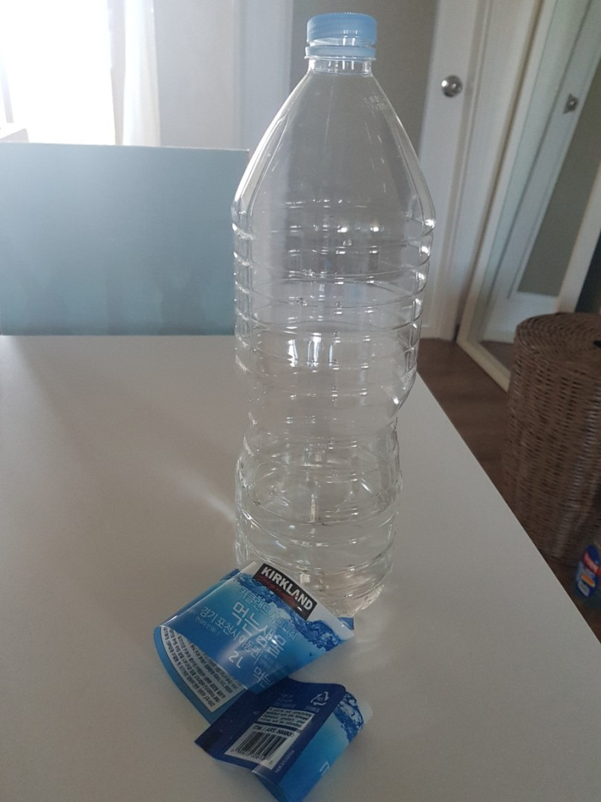
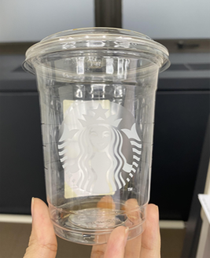

분리수거 생수병, 투명 음료수 병, 투명 우유 통 등 과 같은 투명
플라스틱은 다른 플라스틱에 비해 재활용률이 매우 높다고합니다.
투명 플라스틱을 재활용을 시켜 환경을 보호하세요!
※ 카페 일회용 컵, 식품 포장 용기, 양념류 통은 투명 플라스틱이
아니므로 인증 불가합니다.
재활용 하기
하루 한 번
아침 9시 리셋
평가 기준


승인 예시
거절 예시
· 투명 음료를 담는 페트병인가요?(양념류 통 불가)
· 투명 플라스틱 겉면에 이물질이 없나요?
· 내용물이 비어있나요?
❗경고
· 같은 사진을 반복적 또는 여러 사람이 찍은 경우 운영진의 정책에 의거 해 제재를 가할 수 있습니다.